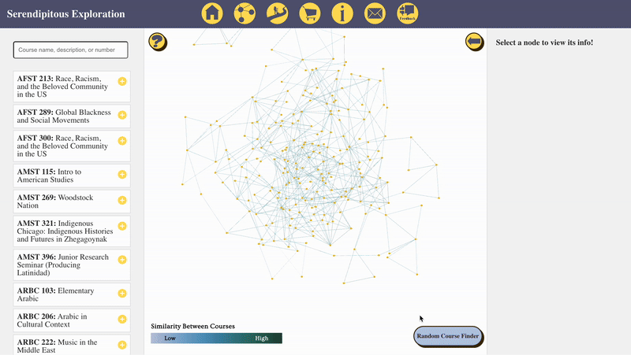
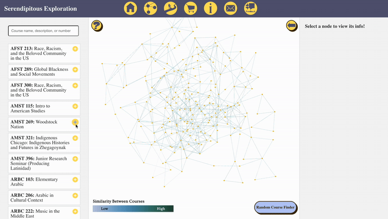
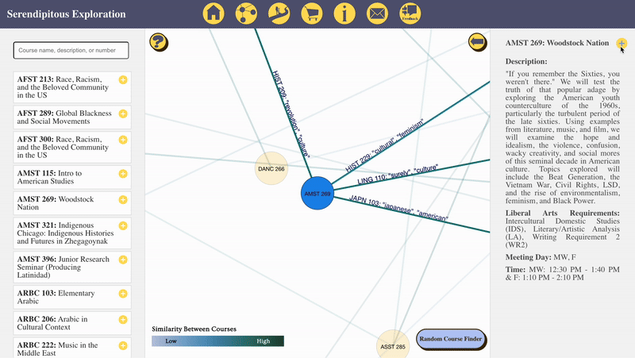
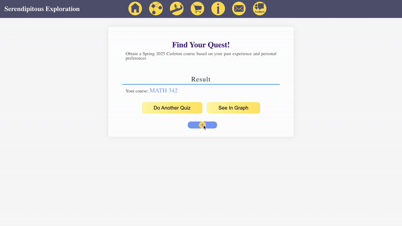

Randomizer
This demo shows the graph updating randomly when the randomizer button is clicked.
This demo shows the graph updating randomly when the randomizer button is clicked.
This demo shows the graph updating based on clicking on the search bar queries.
This demo shows the graph updating when words on a connecting line are clicked.
1. Saving it via the search bar
2. Saving it via the information bar
3. Saving it via the quiz result's page.
After filling out the 'Export saved courses' section, this information will be emailed to user:
Now, assuming the user's calendar is cleared, after filling in the emailed input phrase, user will get their selected courses back:

Once our course descriptions are vectorized as is described in "The Model" section, we are able to use cosine similarity to calculate the distance between each course. In other words, we can calculate relative distances, which hopefully indicate semantic/structural similarity in descriptions. If a pair of courses are similar enough to pass a threshold that we set, we will draw a line between each of their nodes on our graph.
Each course connection includes two words, each representing the most similar term from the other course’s description. These words are identified using a Word2Vec model, which, like the Doc2Vec model underlying our graph, captures semantic relationships. However, Word2Vec is specifically designed for individual words rather than entire documents. This feature provides a simplified representation of how our Doc2Vec model functions, making its behavior easier to interpret. Additionally, upon hovering over the words on a line, if one of the words is in the description currently opened, that word will be highlighted.